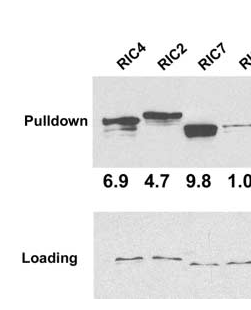

RIC7 is a CRIB-domain effector of plant ROP small GTPases. It binds activated ROP1 and ROP2 and is recruited to the plasma membrane during signaling. In guard cells it restrains light-induced stomatal opening through a pathway involving the exocyst component Exo70B1. RIC7 also attenuates ABA-induced stomatal closure, with elevated RIC7 expression associated with reduced guard-cell ROS accumulation. The protein occupies nuclear, cytoplasmic and peripheral plasma-membrane pools, with its distribution depending on light and ROP activation. RIC7 also interacts with ROP1 in pollen-tube signaling; heterologous overexpression reduces pollen-tube elongation.
| GO Term | Evidence | Action | Reason |
|---|---|---|---|
|
GO:0003674
molecular_function
|
ND
GO_REF:0000015 |
MODIFY |
Summary: RIC7 binds activated ROP small GTPases; its molecular function is experimentally characterized.
Reason: The ND root annotation does not capture the ROP-effector activity. Prefer small GTPase binding (GO:0031267): Jeon et al. demonstrate preferential binding to GTP-loaded ROP2 in Figure 7D (PMID:18178769), and Wu et al. report ROP1 interaction (PMID:11752391).
Proposed replacements:
small GTPase binding
Supporting Evidence:
file:ARATH/Q1G3K8/Q1G3K8-uniprot.txt
Interacts with ARAC4/ROP2 and ARAC11/ROP1.
|
|
GO:0005634
nucleus
|
IDA
PMID:18178769 The Arabidopsis small G protein ROP2 is activated by light i... |
KEEP AS NON CORE |
Summary: RIC7 accumulates in guard-cell nuclei in darkness.
Reason: GFP-RIC7 imaging supports nuclear localization under dark or inactive-ROP2 conditions (PMID:18178769, Figure 7). Retain this conditional location; a specific nuclear activity has not been established.
Supporting Evidence:
file:ARATH/Q1G3K8/Q1G3K8-uniprot.txt
In guard cells in the
CC dark localizes predominantly in the nucleus
|
|
GO:0005634
nucleus
|
IEA
GO_REF:0000044 |
KEEP AS NON CORE |
Summary: The nuclear-location mapping agrees with experimentally observed dark-state localization.
Reason: The Swiss-Prot location maps to a real RIC7 pool documented in PMID:18178769. It does not imply a constitutive nuclear role or transcriptional activity.
Supporting Evidence:
file:ARATH/Q1G3K8/Q1G3K8-uniprot.txt
In guard cells in the
CC dark localizes predominantly in the nucleus
|
|
GO:0005634
nucleus
|
ISM
GO_REF:0000122 |
KEEP AS NON CORE |
Summary: The nuclear prediction is consistent with the observed nuclear pool of RIC7.
Reason: Nuclear localization is independently supported by GFP-RIC7 imaging in PMID:18178769. The AtSubP prediction is compatible with that conditional distribution, although it cannot describe light-dependent redistribution.
Supporting Evidence:
file:ARATH/Q1G3K8/Q1G3K8-uniprot.txt
In guard cells in the
CC dark localizes predominantly in the nucleus
|
|
GO:0005737
cytoplasm
|
EXP
PMID:11752391 A genome-wide analysis of Arabidopsis Rop-interactive CRIB m... |
ACCEPT |
Summary: RIC7 has a cytoplasmic pool in pollen tubes.
Reason: The RIC7 localization experiments in PMID:11752391 support a soluble intracellular pool alongside membrane-associated protein. This distribution is compatible with recruitment of a CRIB-containing ROP effector.
Supporting Evidence:
file:ARATH/Q1G3K8/Q1G3K8-uniprot.txt
Cytoplasm
CC {ECO:0000269|PubMed:11752391, ECO:0000269|PubMed:18178769}.
|
|
GO:0005737
cytoplasm
|
EXP
PMID:18178769 The Arabidopsis small G protein ROP2 is activated by light i... |
ACCEPT |
Summary: RIC7 occurs in the guard-cell cytoplasm following illumination.
Reason: The cytoplasmic pool accompanies light-dependent redistribution in the ROP2 experiments (PMID:18178769); it is consistent with a soluble effector that can be recruited to the plasma membrane.
Supporting Evidence:
file:ARATH/Q1G3K8/Q1G3K8-uniprot.txt
Cytoplasm
CC {ECO:0000269|PubMed:11752391, ECO:0000269|PubMed:18178769}.
|
|
GO:0005737
cytoplasm
|
IEA
GO_REF:0000044 |
ACCEPT |
Summary: The cytoplasm mapping reflects an experimentally supported RIC7 location.
Reason: Swiss-Prot curates cytoplasmic localization from PMID:11752391 and PMID:18178769. This is consistent with the protein's dynamic intracellular distribution.
Supporting Evidence:
file:ARATH/Q1G3K8/Q1G3K8-uniprot.txt
Cytoplasm
CC {ECO:0000269|PubMed:11752391, ECO:0000269|PubMed:18178769}.
|
|
GO:0005886
plasma membrane
|
EXP
PMID:11752391 A genome-wide analysis of Arabidopsis Rop-interactive CRIB m... |
ACCEPT |
Summary: RIC7 associates with the pollen-tube plasma membrane.
Reason: The localization experiments in PMID:11752391 support membrane recruitment of RIC7 during ROP signaling. Membrane association is peripheral rather than evidence for an integral membrane receptor.
Supporting Evidence:
file:ARATH/Q1G3K8/Q1G3K8-uniprot.txt
Cell
CC membrane {ECO:0000269|PubMed:11752391, ECO:0000269|PubMed:18178769};
|
|
GO:0005886
plasma membrane
|
IBA
GO_REF:0000033 |
ACCEPT |
Summary: Plasma-membrane association is consistent with the inherited RIC-family effector role.
Reason: The PAINT inference at PANTHER:PTN005297055 agrees with target-specific localization in PMID:11752391 and PMID:18178769. There is no target-specific evidence against inheritance of this location.
Supporting Evidence:
file:ARATH/Q1G3K8/Q1G3K8-uniprot.txt
Cell
CC membrane {ECO:0000269|PubMed:11752391, ECO:0000269|PubMed:18178769};
|
|
GO:0005886
plasma membrane
|
IDA
PMID:18178769 The Arabidopsis small G protein ROP2 is activated by light i... |
ACCEPT |
Summary: Activated ROP2 recruits RIC7 to the guard-cell plasma membrane.
Reason: Figure 7 of PMID:18178769 directly documents membrane recruitment following illumination or expression of constitutively active ROP2. This location is central to RIC7 signaling.
Supporting Evidence:
file:ARATH/Q1G3K8/Q1G3K8-uniprot.txt
Cell
CC membrane {ECO:0000269|PubMed:11752391, ECO:0000269|PubMed:18178769};
|
|
GO:0005886
plasma membrane
|
IEA
GO_REF:0000120 |
ACCEPT |
Summary: The electronic plasma-membrane annotation agrees with experimental localization.
Reason: The target-specific experiments in PMID:11752391 and PMID:18178769 demonstrate plasma-membrane association and support this electronic annotation.
Supporting Evidence:
file:ARATH/Q1G3K8/Q1G3K8-uniprot.txt
Cell
CC membrane {ECO:0000269|PubMed:11752391, ECO:0000269|PubMed:18178769};
|
|
GO:0009416
response to light stimulus
|
IDA
PMID:18178769 The Arabidopsis small G protein ROP2 is activated by light i... |
KEEP AS NON CORE |
Summary: RIC7 participates in the guard-cell response to light.
Reason: The RIC7 experiments in PMID:18178769 show light-dependent redistribution and inhibition of light-induced stomatal opening. Retain this broad response as non-core; negative regulation of stomatal opening describes the physiological role more precisely. Redistribution supports responsiveness to light without establishing direct photoreception.
Supporting Evidence:
file:ARATH/Q1G3K8/Q1G3K8-uniprot.txt
involved in the prevention of excessive stomatal opening upon light
CC stimulation.
|
|
GO:0009860
pollen tube growth
|
IBA
GO_REF:0000033 |
KEEP AS NON CORE |
Summary: RIC7 participates in ROP-dependent pollen-tube growth regulation.
Reason: The PAINT inference at PANTHER:PTN008200783 is consistent with ROP1 binding, pollen expression and the heterologous overexpression phenotype in PMID:11752391. Retain the process without assigning an endogenous inhibitory mechanism from overexpression alone; stomatal regulation has stronger target-specific genetic support.
Supporting Evidence:
file:ARATH/Q1G3K8/Q1G3K8-uniprot.txt
Over-expression of RIC7 in tobacco germinating pollen
CC reduces pollen tube elongation.
|
|
GO:0009966
regulation of signal transduction
|
IBA
GO_REF:0000033 |
ACCEPT |
Summary: RIC7 mediates downstream ROP signaling.
Reason: The inference at PANTHER:PTN008706952 is consistent with the experimentally characterized ROP-effector role. RIC7 binds ROP1/ROP2 and links activated ROP2 to control of stomatal movement (PMID:11752391; PMID:18178769; PMID:26451971).
Supporting Evidence:
file:ARATH/Q1G3K8/Q1G3K8-uniprot.txt
Functions as a downstream effector of Rho-related GTP binding
CC proteins of the 'Rho of Plants' (ROPs) family.
|
|
GO:1902457
negative regulation of stomatal opening
|
IMP
PMID:26451971 The ROP2-RIC7 pathway negatively regulates light-induced sto... |
NEW |
Summary: RIC7 restrains light-induced stomatal opening.
Reason: Arabidopsis ric7 loss-of-function, native-promoter complementation and overexpression establish a negative effect on stomatal opening (PMID:26451971). This captures the direction of the genetically demonstrated response.
Supporting Evidence:
PMID:26451971
Light-induced stomatal opening was promoted by ric7 knockout, whereas it was inhibited by RIC7 overexpression
|
|
GO:0090333
regulation of stomatal closure
|
IMP
PMID:33586611 RIC7 plays a negative role in ABA-induced stomatal closure b... |
NEW |
Summary: Elevated RIC7 expression attenuates ABA-induced stomatal closure.
Reason: The ric7-2 and ric7-3 promoter-insertion lines increase RIC7 expression and show reduced ABA-induced closure (PMID:33586611), consistent with the independent genetic evidence in PMID:26451971. The effect is negative; the available regulation term captures participation without treating these lines as knockouts or assigning a direct ROS-generating activity.
Supporting Evidence:
PMID:33586611
using two RIC7 overexpressing mutants, we confirmed the negative role of RIC7 in ABA-induced stomatal closure
|
Q: Does the nuclear pool of RIC7 have a biochemical function, or serve primarily as a regulated reservoir for membrane recruitment?
Q: What endogenous pollen-tube phenotype follows specific loss of AT4G28556, and how does it relate to the heterologous overexpression phenotype?
Experiment: Introduce a functional fluorescent tag at the endogenous AT4G28556 locus and measure localization and Exo70B1 association during light transitions, using stomatal-aperture rescue to verify tag functionality.
Hypothesis: ROP-dependent redistribution of endogenous RIC7 controls its access to Exo70B1.
Type: Endogenous tagging, live-cell imaging and functional complementation
Experiment: Measure pollen germination, tube elongation and fertility in an AT4G28556-specific loss-of-function line and native-promoter rescue, verifying that adjacent AT4G28560 expression is preserved.
Hypothesis: AT4G28556 contributes to pollen-tube growth at physiological expression levels.
Type: Targeted genetics and pollen phenotyping
The research report should be a detailed narrative explaining the function, biological processes, and localization of the gene product. Citations should be given for all claims.
You should prioritize authoritative reviews and primary scientific literature when conducting research. You can supplement
this with annotations you find in gene/protein databases, but these can be outdated or inaccurate.
We are specifically interested in the primary function of the gene - for enzymes, what reaction is catalyzed, and what is the substrate specificity? For transporters, what is the substrate? For structural proteins or adapters, what is the broader structural role? For signaling molecules, what is the role in the pathway.
We are interested in where in or outside the cell the gene product carries out its function.
We are also interested in the signaling or biochemical pathways in which the gene functions. We are less interested in broad pleiotropic effects, except where these elucidate the precise role.
Include evidence where possible. We are interested in both experimental evidence as well as inference from structure, evolution, or bioinformatic analysis. Precise studies should be prioritized over high-throughput, where available.
The target is RIC7 from Arabidopsis thaliana, supplied as UniProt Q1G3K8, gene/locus RIC7 / At4g28556, and aliases “ROP-interactive CRIB motif-containing protein 7” and “Target of ROP protein RIC7.” Its description and CRIB/PBD annotations are consistent with the Arabidopsis RIC family discovered as plant-specific effectors of ROP small GTPases. The foundational study places RIC7 in RIC group II with RIC6 and RIC8; RIC6 and RIC7 share 66% amino-acid identity. However, the retrieved paper does not explicitly connect its historical RIC7 sequence identifier to Q1G3K8/At4g28556, so that exact accession–locus mapping rests on the supplied UniProt record rather than an independently verified statement in the paper. No evidence concerning a similarly named protein from another organism was used. (wu2001agenomewideanalysis pages 2-3)
The most defensible functional annotation is: RIC7 is a small, nonenzymatic CRIB-domain ROP-binding protein—probably an effector or adaptor that couples activated, membrane-associated ROP GTPases to an as-yet-unidentified downstream process. Direct evidence shows recombinant RIC7 binding to constitutively active ROP1, apical plasma-membrane localization in a heterologous pollen-tube assay, redistribution upon ROP1 overexpression, broad transcription in Arabidopsis organs, and severe inhibition of pollen-tube elongation when overexpressed. There is no established catalytic reaction, substrate, transporter activity, endogenous downstream partner, native loss-of-function phenotype, or demonstrated localization at endogenous abundance. (wu2001agenomewideanalysis pages 6-7, wu2001agenomewideanalysis pages 7-9, wu2001agenomewideanalysis pages 9-11)
RIC proteins were identified as a family of 11 Arabidopsis proteins containing a conserved CRIB motif—the Cdc42/Rac-interactive binding module that recognizes the effector surface of activated Rho-family GTPases. Nine RIC cDNAs, including RIC7, were recovered and sequence-confirmed; RIC8 and RIC11 were the exceptions. RIC proteins are only approximately 116–224 amino acids long and are highly divergent outside the conserved ROP-interactive region. Most—including group-II RIC7—carry the CRIB motif near the N terminus and a downstream conserved PSWMXDFK block. (wu2001agenomewideanalysis pages 2-3, wu2001agenomewideanalysis pages 3-6)
The supplied InterPro/Pfam annotations—CRIB_dom (IPR000095), CRIB-domain superfamily (IPR036936), and PBD (PF00786)—therefore align with the literature. Here PBD denotes a p21-binding/CRIB-containing interaction domain, not an enzyme active site. RIC7 should consequently not be annotated as an enzyme or transporter; its likely molecular function is regulated protein–protein interaction with the GTP-loaded state of a ROP GTPase.
The family’s nucleotide-state mechanism was demonstrated most rigorously for RIC1: RIC1 bound GTP-loaded constitutively active ROP1 but not GDP-loaded dominant-negative ROP1, and substitutions of conserved CRIB histidines sharply reduced binding and plasma-membrane localization. This establishes the CRIB motif as the family’s active-ROP recognition element, but that complete active-versus-inactive comparison was not performed individually for RIC7. (wu2001agenomewideanalysis pages 2-3, wu2001agenomewideanalysis pages 6-7)
RIC7 itself was included in a recombinant GST–CA-ROP1/MBP–RIC pulldown and bound constitutively active ROP1 strongly. Figure 6 reports a loading-normalized relative signal of 9.8, higher in that assay than the displayed RIC4 and RIC2 values of 6.9 and 4.7. This supports direct biochemical association with active CA-ROP1, although the numbers are relative blot intensities rather than an affinity constant and should not be interpreted as a dissociation constant or universal ranking of physiological partners. (wu2001agenomewideanalysis pages 6-7, wu2001agenomewideanalysis pages 7-9, wu2001agenomewideanalysis media a6b14423)
Accordingly, RIC7’s primary biochemical role is best described as binding activated ROP-family GTPases through its CRIB/PBD region and potentially presenting or recruiting an unknown downstream partner. The original authors also considered that RIC7 might preferentially serve another pollen-expressed ROP rather than ROP1, but candidate ROP8/ARAC8/ARAC10 relationships were speculative and were not experimentally assigned to RIC7. (wu2001agenomewideanalysis pages 13-14, wu2001agenomewideanalysis pages 11-13)
In transiently transformed tobacco pollen tubes, LAT52-driven GFP–RIC7 localized predominantly to the apical plasma-membrane region, with a cytoplasmic pool. This is spatially compatible with signaling from active ROPs at the tip-growth domain. ROP1 co-overexpression did not intensify RIC7’s apical enrichment; instead, it redistributed GFP–RIC7 across the plasma membrane along the entire tube. That behavior indicates ROP-sensitive membrane association but differs from the strongly ROP1-enhanced apical recruitment reported for RIC4. (wu2001agenomewideanalysis pages 3-6, wu2001agenomewideanalysis pages 6-7, wu2001agenomewideanalysis pages 9-11)
This localization requires careful qualification: it was observed after overexpression of a GFP fusion in tobacco, not by imaging endogenous RIC7 in Arabidopsis. Therefore “apical plasma membrane in pollen tubes” is an experimentally supported localization capacity, but not yet a validated native Arabidopsis localization.
ROP1 is a polarly localized molecular switch controlling Arabidopsis pollen-tube tip growth. At pathway level, activated ROP1 coordinates calcium signaling, actin dynamics, secretion and endocytosis, cell-wall remodeling, and polarized expansion. A 2020 ROP1 immunoprecipitation–mass-spectrometry study recovered 654 candidate associated proteins, including membrane and trafficking components; 12 of 39 previously reported interactors were recovered, and 8 of 32 tested candidate mutants showed pollen germination or growth defects. These data reinforce the breadth of the ROP1 signaling network, but they did not recover or validate RIC7. (li2020rhogtpaserop1 pages 1-3, li2020rhogtpaserop1 pages 5-8, li2020rhogtpaserop1 pages 3-5)
The specific downstream branches often associated with RIC proteins must not be transferred automatically to RIC7. RIC3 has been linked to tip-focused Ca²⁺ signaling, whereas RIC4 is linked to actin organization and turnover; the modern interactome recovered RIC1, RIC3, and RIC5, not RIC7. No RIC7-specific calcium, actin, membrane-trafficking, exocyst, or cell-wall effector has been demonstrated in the retrieved evidence. (li2020rhogtpaserop1 pages 1-3, li2020rhogtpaserop1 pages 5-8)
Thus, the supported pathway statement is narrow: RIC7 can engage active ROP1 and can occupy a tip-associated plasma-membrane domain, placing it as a candidate branch-specific ROP signaling adaptor in polarized growth. Whether that is its principal endogenous role, and what output it transmits, remain unknown.
Conventional RT-PCR detected RIC7 transcript in mature Arabidopsis pollen and in both reproductive and vegetative organs, including flowers/inflorescences, leaves, roots, and stems. Its expression was broader than that of the flower-enriched group-II paralog RIC6. These results establish broad transcription but provide neither cell-type resolution nor quantitative protein abundance. (wu2001agenomewideanalysis pages 6-7, wu2001agenomewideanalysis pages 7-9)
RIC7 overexpression produced one of the strongest phenotypes in the original tobacco pollen assay. Five hours after bombardment, GFP-control tubes averaged 297 ± 26 µm in length, whereas GFP–RIC7 tubes averaged 54.5 ± 5.4 µm, an approximately 82% reduction. Mean width was 9.8 ± 0.18 µm versus 8.8 ± 0.24 µm for control, and the width/length ratio rose from 0.03 to 0.18 ± 0.01, mainly because elongation was strongly curtailed. (wu2001agenomewideanalysis pages 3-6, wu2001agenomewideanalysis pages 7-9)
This is a heterologous gain-of-function result, not evidence that endogenous RIC7 normally inhibits pollen growth. The original authors explicitly considered alternative explanations: excess RIC7 could competitively sequester active ROP, bind another limiting partner, or generate a dominant-negative effect by occupying ROP without productively activating the correct downstream machinery. No ric7 loss-of-function analysis was presented to distinguish these models. (wu2001agenomewideanalysis pages 9-11, wu2001agenomewideanalysis pages 11-13)
The evidence and its limitations are summarized below.
| Topic | RIC7-specific finding | Evidence type/model | Confidence/limitation |
|---|---|---|---|
| Identity and domain | Target record: Arabidopsis thaliana RIC7, locus At4g28556, UniProt Q1G3K8; annotated as a CRIB/PBD-domain ROP-interactive protein. The primary study independently places RIC7 in CRIB-containing RIC group II with RIC6 and RIC8; RIC6 and RIC7 share 66% amino-acid identity. (wu2001agenomewideanalysis pages 2-3) | Accession and locus mapping are database-provided; family placement and CRIB architecture derive from sequence analysis and cloned-cDNA confirmation. | Moderate. Identity is internally consistent, but the retrieved paper does not explicitly map its historical RIC7 sequence to Q1G3K8/At4g28556. The CRIB domain supports a ROP-effector role but does not establish a specific physiological pathway by itself. |
| Active ROP binding | Recombinant RIC7 bound constitutively active, GTP-bound CA-ROP1 in vitro; the normalized pulldown signal reported in Figure 6 was 9.8. (wu2001agenomewideanalysis pages 6-7, wu2001agenomewideanalysis pages 7-9, wu2001agenomewideanalysis media a6b14423) | GST–CA-ROP1/MBP–RIC7 affinity pulldown using bacterially expressed proteins. | Moderate–high for in-vitro binding. The experiment supports direct association with active CA-ROP1, but RIC7 was not individually compared with GDP-bound ROP1; nucleotide-state specificity is demonstrated most directly for RIC1 and inferred for RIC7 from the conserved CRIB motif. |
| Basal localization | GFP–RIC7 localized predominantly to the apical plasma-membrane region, with a cytoplasmic pool, in growing pollen tubes. (wu2001agenomewideanalysis pages 3-6, wu2001agenomewideanalysis pages 9-11, wu2001agenomewideanalysis pages 11-13) | Transient LAT52-driven overexpression of GFP–RIC7 in heterologous tobacco pollen tubes; confocal microscopy approximately 5 h after bombardment. | Moderate. Demonstrates localization capacity in a tip-growing cell, but not endogenous localization in Arabidopsis or localization at native expression levels. |
| ROP1-dependent redistribution | ROP1 co-overexpression shifted GFP–RIC7 from the apical membrane/cytoplasm to the plasma membrane throughout the pollen tube, without enhancing its apical enrichment. (wu2001agenomewideanalysis pages 6-7, wu2001agenomewideanalysis pages 9-11, wu2001agenomewideanalysis pages 11-13) | Transient GFP–RIC7 and ROP1 co-overexpression in tobacco pollen tubes. | Moderate. Supports ROP-sensitive membrane recruitment or redistribution, but overexpression complicates physiological interpretation and does not prove that endogenous ROP1 is RIC7’s principal upstream GTPase. |
| Expression | RIC7 transcripts were detected in mature Arabidopsis pollen and broadly across reproductive and vegetative organs, including flowers/inflorescences, leaves, roots, and stems. (wu2001agenomewideanalysis pages 6-7, wu2001agenomewideanalysis pages 7-9) | Conventional RT-PCR of RNA from mature pollen and dissected Arabidopsis organs. | Moderate. Supports broad transcription but is not cell-resolved or quantitative; transcript detection does not establish protein abundance or localization. |
| Overexpression phenotype | GFP–RIC7 strongly inhibited pollen-tube elongation: mean length 54.5 ± 5.4 µm, versus 297 ± 26 µm for GFP control—approximately an 82% reduction. Width/length increased to 0.18 ± 0.01, versus 0.03 ± 0.00 for control. (wu2001agenomewideanalysis pages 3-6, wu2001agenomewideanalysis pages 7-9) | Transient overexpression in tobacco pollen; morphometry 5 h after particle bombardment. | Moderate for the overexpression effect; low for endogenous function. A heterologous gain-of-function phenotype may reflect sequestration of active ROPs or other partners and cannot establish whether native RIC7 promotes or inhibits growth. |
| Endogenous downstream mechanism | No RIC7-specific endogenous downstream effector, biochemical output, or substrate has been established. RIC7 is therefore best considered a candidate nonenzymatic CRIB-domain ROP effector/adaptor, not an enzyme or transporter. (wu2001agenomewideanalysis pages 9-11, wu2001agenomewideanalysis pages 11-13) | Domain-based inference combined with the original authors’ ROP–RIC signaling model. | Low. Actin and calcium mechanisms established or proposed for RIC4 and RIC3 must not be transferred to RIC7. |
| Loss-of-function evidence | No validated RIC7 knockout or knockdown phenotype was identified in the retrieved primary or recent literature. The original study explicitly noted that knockout analysis was required to resolve functions of inhibitory RICs. (wu2001agenomewideanalysis pages 9-11, wu2001agenomewideanalysis pages 11-13) | Literature-gap assessment. | Unknown. Necessity, redundancy, tissue-specific physiological roles, and direction of endogenous action remain unresolved. |
| Native localization | Endogenous RIC7 protein localization in Arabidopsis cells has not been demonstrated in the retrieved evidence. | Literature-gap assessment contrasted with transient tobacco-pollen imaging. | Unknown. Apical plasma-membrane localization should be reported as an overexpression result in a heterologous pollen system, not as established native localization. |
Table: This table separates direct RIC7 observations from domain-based inference and unresolved questions. It highlights the heterologous or overexpression context of most functional evidence and distinguishes database identity mapping from primary-paper results.
Targeted searches found no RIC7-specific primary publication from 2023–2024. The direct functional record remains dominated by the 2001 genome-wide RIC study. The 2020 ROP1 interactome substantially expanded the known pollen ROP network but did not provide modern validation for RIC7. Consequently, the absence of recent studies is scientifically important: RIC7 remains much less characterized than RIC1, RIC3, or RIC4. (li2020rhogtpaserop1 pages 1-3, li2020rhogtpaserop1 pages 5-8)
There is no documented agricultural, biotechnological, diagnostic, or therapeutic implementation of RIC7. Its present application is principally as a research candidate for studying how activated plant Rho GTPases select among small CRIB-domain effectors and establish spatially restricted signaling at the plasma membrane. Because RIC7 is broadly transcribed and strongly perturbs tip growth when overexpressed, rigorous future applications would require endogenous tagging, CRISPR null and separation-of-function alleles, quantitative active-ROP binding, and tissue-resolved phenotyping before crop-engineering claims would be justified.
High-confidence statements: the target belongs to the Arabidopsis CRIB-containing RIC class; RIC7 is a group-II RIC closely related to RIC6; recombinant RIC7 binds CA-ROP1; and overexpressed GFP–RIC7 can associate with the apical pollen-tube plasma membrane. (wu2001agenomewideanalysis pages 2-3, wu2001agenomewideanalysis pages 6-7, wu2001agenomewideanalysis media a6b14423)
Moderate-confidence functional interpretation: RIC7 is a noncatalytic effector/adaptor for activated ROP GTPases. This combines direct in-vitro binding with domain architecture and membrane redistribution, but the physiologically dominant upstream ROP is not established.
Low-confidence or unresolved: endogenous molecular output, direction of action, native subcellular localization, essentiality, genetic redundancy, and roles outside pollen. No specific actin, calcium, exocyst, trafficking, or cell-wall mechanism should currently be assigned to RIC7.
A concise annotation suitable for a curated record would be: “CRIB-domain-containing candidate effector/adaptor of activated ROP small GTPases. RIC7 binds constitutively active ROP1 in vitro and, when overexpressed in tobacco pollen tubes, localizes to the apical plasma membrane and strongly inhibits elongation. Its endogenous downstream partner and physiological function in Arabidopsis remain uncharacterized.”
References
(wu2001agenomewideanalysis pages 2-3): Guang Wu, Ying Gu, Shundai Li, and Zhenbiao Yang. A genome-wide analysis of arabidopsis rop-interactive crib motif–containing proteins that act as rop gtpase targets article, publication date, and citation information can be found at www.plantcell.org/cgi/doi/10.1105/tpc.010218. The Plant Cell Online, 13:2841-2856, Dec 2001. URL: https://doi.org/10.1105/tpc.010218, doi:10.1105/tpc.010218. This article has 296 citations.
(wu2001agenomewideanalysis pages 6-7): Guang Wu, Ying Gu, Shundai Li, and Zhenbiao Yang. A genome-wide analysis of arabidopsis rop-interactive crib motif–containing proteins that act as rop gtpase targets article, publication date, and citation information can be found at www.plantcell.org/cgi/doi/10.1105/tpc.010218. The Plant Cell Online, 13:2841-2856, Dec 2001. URL: https://doi.org/10.1105/tpc.010218, doi:10.1105/tpc.010218. This article has 296 citations.
(wu2001agenomewideanalysis pages 7-9): Guang Wu, Ying Gu, Shundai Li, and Zhenbiao Yang. A genome-wide analysis of arabidopsis rop-interactive crib motif–containing proteins that act as rop gtpase targets article, publication date, and citation information can be found at www.plantcell.org/cgi/doi/10.1105/tpc.010218. The Plant Cell Online, 13:2841-2856, Dec 2001. URL: https://doi.org/10.1105/tpc.010218, doi:10.1105/tpc.010218. This article has 296 citations.
(wu2001agenomewideanalysis pages 9-11): Guang Wu, Ying Gu, Shundai Li, and Zhenbiao Yang. A genome-wide analysis of arabidopsis rop-interactive crib motif–containing proteins that act as rop gtpase targets article, publication date, and citation information can be found at www.plantcell.org/cgi/doi/10.1105/tpc.010218. The Plant Cell Online, 13:2841-2856, Dec 2001. URL: https://doi.org/10.1105/tpc.010218, doi:10.1105/tpc.010218. This article has 296 citations.
(wu2001agenomewideanalysis pages 3-6): Guang Wu, Ying Gu, Shundai Li, and Zhenbiao Yang. A genome-wide analysis of arabidopsis rop-interactive crib motif–containing proteins that act as rop gtpase targets article, publication date, and citation information can be found at www.plantcell.org/cgi/doi/10.1105/tpc.010218. The Plant Cell Online, 13:2841-2856, Dec 2001. URL: https://doi.org/10.1105/tpc.010218, doi:10.1105/tpc.010218. This article has 296 citations.
(wu2001agenomewideanalysis media a6b14423): Guang Wu, Ying Gu, Shundai Li, and Zhenbiao Yang. A genome-wide analysis of arabidopsis rop-interactive crib motif–containing proteins that act as rop gtpase targets article, publication date, and citation information can be found at www.plantcell.org/cgi/doi/10.1105/tpc.010218. The Plant Cell Online, 13:2841-2856, Dec 2001. URL: https://doi.org/10.1105/tpc.010218, doi:10.1105/tpc.010218. This article has 296 citations.
(wu2001agenomewideanalysis pages 13-14): Guang Wu, Ying Gu, Shundai Li, and Zhenbiao Yang. A genome-wide analysis of arabidopsis rop-interactive crib motif–containing proteins that act as rop gtpase targets article, publication date, and citation information can be found at www.plantcell.org/cgi/doi/10.1105/tpc.010218. The Plant Cell Online, 13:2841-2856, Dec 2001. URL: https://doi.org/10.1105/tpc.010218, doi:10.1105/tpc.010218. This article has 296 citations.
(wu2001agenomewideanalysis pages 11-13): Guang Wu, Ying Gu, Shundai Li, and Zhenbiao Yang. A genome-wide analysis of arabidopsis rop-interactive crib motif–containing proteins that act as rop gtpase targets article, publication date, and citation information can be found at www.plantcell.org/cgi/doi/10.1105/tpc.010218. The Plant Cell Online, 13:2841-2856, Dec 2001. URL: https://doi.org/10.1105/tpc.010218, doi:10.1105/tpc.010218. This article has 296 citations.
(li2020rhogtpaserop1 pages 1-3): Hui Li, Jinbo Hu, Jing Pang, Liangtao Zhao, Bing Yang, Xinlei Kang, Aimin Wang, Tongda Xu, and Zhenbiao Yang. Rho gtpase rop1 interactome analysis reveals novel rop1-associated pathways for pollen tube polar growth in arabidopsis. International Journal of Molecular Sciences, 21:7033, Sep 2020. URL: https://doi.org/10.3390/ijms21197033, doi:10.3390/ijms21197033. This article has 12 citations.
(li2020rhogtpaserop1 pages 5-8): Hui Li, Jinbo Hu, Jing Pang, Liangtao Zhao, Bing Yang, Xinlei Kang, Aimin Wang, Tongda Xu, and Zhenbiao Yang. Rho gtpase rop1 interactome analysis reveals novel rop1-associated pathways for pollen tube polar growth in arabidopsis. International Journal of Molecular Sciences, 21:7033, Sep 2020. URL: https://doi.org/10.3390/ijms21197033, doi:10.3390/ijms21197033. This article has 12 citations.
(li2020rhogtpaserop1 pages 3-5): Hui Li, Jinbo Hu, Jing Pang, Liangtao Zhao, Bing Yang, Xinlei Kang, Aimin Wang, Tongda Xu, and Zhenbiao Yang. Rho gtpase rop1 interactome analysis reveals novel rop1-associated pathways for pollen tube polar growth in arabidopsis. International Journal of Molecular Sciences, 21:7033, Sep 2020. URL: https://doi.org/10.3390/ijms21197033, doi:10.3390/ijms21197033. This article has 12 citations.

Q1G3K8 is the 216-aa CRIB-domain RIC7 protein at AT4G28556. The separately
encoded AT4G28560/F4JLB7 protein is a 450-aa LRR protein also called EXLRR12.
The detailed database-name investigation, TAIR comparisons, Cornell citation,
and JBrowse figure are in the
project report.
The sequence/primer analysis connects the
published Wu and Hong RIC7 primers to AT4G28556. It distinguishes experimental
targets without assuming that every older construct exactly matches the current
canonical sequence.
Wu et al. 2001, PMID:11752391,
Tables 1, 2 and 4 and the ROP1-binding/localization experiments, support RIC7
interaction with active ROP1, cytoplasmic and apical plasma-membrane localization,
and inhibition of elongation upon expression in tobacco pollen tubes. This is
heterologous overexpression evidence, not an Arabidopsis loss-of-function
demonstration of an endogenous inhibitory role. The publication cache is
abstract-only; relevant full-text passages and primer table were inspected via
indexed PMC text. The primer mapping supplies target-identity evidence.
Jeon et al. 2008, PMID:18178769,
Figure 7 and its associated Results, explicitly concern AT4G28556 and demonstrate
preferential interaction with GTP-loaded ROP2. GFP-RIC7 redistributes from a
predominantly nuclear pool in darkness to the membrane/cytoplasm with light;
active ROP2 recruits it to the membrane, whereas inactive ROP2 does not.
The experiments express Arabidopsis RIC7 in Vicia faba guard cells. Nuclear
localization is supported, but a nuclear biochemical role is not established.
The local cache is abstract-only and foregrounds ROP2; the RIC7 findings were
checked in indexed full-text Figure 7/Results and agree with the experimentally
sourced Swiss-Prot entry.
Hong et al. 2016, PMID:26451971,
published online in 2015, provides Arabidopsis mutant, complementation and
overexpression evidence for restraint of stomatal opening and identifies
Exo70B1 as an interacting downstream component. The local abstract directly
supports the new negative-regulation-of-opening annotation. Methods and Results
also describe accelerated ABA-induced closure in ric7 and rescue by the native
promoter construct. The closure finding complements the later Zhu et al. evidence for the proposed stomatal-closure regulation annotation. The transcript
primers map exactly to NM_001036663.2; promoter-fragment boundaries and the physical
insertion have not been independently reconstructed. The report of an insertion
in the second intron is consistent with the multi-exon AT4G28556 model.
All 14 seeded GOA annotations were reviewed. The root ND molecular-function
annotation is better represented by small GTPase binding; nuclear localization,
the broad light response and pollen-tube-growth inference are retained as non-core. The remaining
localization and signaling annotations agree with the target evidence.
Negative regulation of stomatal opening and regulation of stomatal closure are proposed as new IMP annotations.
The molecular activity is ROP binding/effector function; RIC7 is not itself a
GTPase, GEF or kinase. Exo70B1 interaction does not make RIC7 an exocyst subunit.
GO:0031267 (small GTPase binding) and GO:1902457 (negative regulation of stomatal
opening) were checked against the QuickGO ontology service on 2026-09-07.
The 14 original GOA term/evidence/source records were retained unchanged.
The falcon report generated on 2026-09-07 usefully examines the 2001 pollen
experiments but misses Jeon et al. (2008), Hong et al. (2016), and Zhu et al. (2021). Its assertions
that downstream partners, loss-of-function phenotypes and non-pollen roles are
unknown are contradicted by those primary studies. It is retained as generated
provenance and was not used to support those negative assertions. The review
uses the primary literature, experimentally sourced Swiss-Prot record and
reproducible sequence checks. The validator's suggestion to cite the generated
report is therefore intentionally not followed.
PMID:33586611(https://doi.org/10.1080/15592324.2021.1876379) is available
in the cache with full text. The ric7-2 and ric7-3 promoter insertions increase
RIC7 expression; they are gain-of-expression lines, not null mutants. Their
reduced ABA-induced closure and lower ROS accumulation support a regulatory
role. Both reported qRT-PCR primers map exactly to AT4G28556. The study does
not establish RIC7 as a ROS-producing enzyme, scavenger or DNA-binding
transcription factor, and expression changes in other genes are downstream
readouts. The shared closure phenotype with the independently characterized
Hong lines supports the process assignment.
The live QuickGO lookup for GO:0017048
returns GO:0031267, small GTPase binding, with "Rho GTPase binding" as a narrow
synonym. GO:0017048 is not a separate current child to use for the replacement or
core molecular function. The review therefore uses the current GO:0031267 identifier
and specifies activated ROP1/ROP2 binding in its biological description.
GO:0090333
is the current biological-process term regulation of stomatal closure. Its
children query
returned no children, and a QuickGO search for "negative regulation of stomatal
closure" found no term with that name. The review uses GO:0090333 and records the
negative effect in prose; negative regulation of opening is a different process.
The core process list contains the two specific stomatal-regulation terms, while
the broader signal-transduction IBA remains accepted among existing annotations.
Analysis date: 2026-09-07. Reproduction instructions and input provenance.
Computed output: results.json. Coordinates below are 1-based,
inclusive, on the supplied transcript sequence.
The published RIC7 primer pairs from Wu et al. (2001), Hong et al.
(online 2015/issue 2016), and Zhu et al. (2021) map to the AT4G28556 transcript NM_001036663.2,
which encodes the CRIB protein Q1G3K8. None of the six primers has an exact
3′ match of 14 or more bases in the AT4G28560 transcript NM_118998.1.
The comparison strongly assigns these experimental targets to the CRIB locus.
It is a comparison of the two candidate loci, not a genome-wide specificity test.
| Sequence | Comparator | Result |
|---|---|---|
| F4JLB7 | NP_194585.1 | Exact equality, 450 aa |
| F4JLB7 | Translation of NC_003075.7 reverse interval 14116015–14117367 | Exact equality, 450 aa |
| Q1G3K8 | NP_001031740.1 | Exact equality, 216 aa |
| Q1G3K8 | DQ487576.1 annotated CDS translation | Exact equality, 216 aa |
| Primer | Matched bases | Removed 5′ bases | NM_001036663.2 match |
|---|---|---|---|
| Wu2001 RIC7 forward | 21 | 7 | 660–680 |
| Wu2001 RIC7 reverse | 23 | 0 | 1281–1303, reverse complement |
| Hong2016 RIC7 forward | 29 | 0 | 705–733 |
| Hong2016 RIC7 reverse | 29 | 0 | 1256–1284, reverse complement |
| Zhu2021 RIC7 forward | 22 | 0 | 804–825 |
| Zhu2021 RIC7 reverse | 22 | 0 | 917–938, reverse complement |
Primer sequences and source URLs are in data/primers.tsv:
Wu et al., Table 4, DOI:10.1105/tpc.010218
and Hong et al., RT-PCR methods, DOI:10.1111/nph.13625.
Forward and reverse matches have the expected inward-facing orientation. Each
primer has one longest-suffix hit on this transcript. The Wu forward primer's
removed 5′ sequence contains a BamHI cloning site.
The four Wu/Hong primers also match the cDNA DQ487576.1: forward/reverse positions
10–30 and 631–651 for Wu, and 55–83 and 606–634 for Hong. The Wu reverse
primer matches 21 bases at the cDNA end, requiring two 5′ bases to be discarded;
its entire 23 bases match the longer RefSeq transcript. No matching hits were
found in NM_118998.1 under the same rules.
The Wu forward primer matches near, rather than exactly at, the start of the
current Q1G3K8 CDS. These results identify the locus but do not establish that
the original fusion expressed exactly the current 216-residue protein. Hong's
primers are transcript-assay primers; they do not independently sequence every
expression construct, promoter fragment, or mutant insertion.
The Zhu et al. (2021) qRT-PCR primers match DQ487576.1 at 154–175
and 267–288 respectively (all 22 bases each), with no hits in NM_118998.1.
The methods were read in cached full text
PMID:33586611(https://doi.org/10.1080/15592324.2021.1876379).
id: Q1G3K8
gene_symbol: RIC7
product_type: PROTEIN
status: COMPLETE
taxon:
id: NCBITaxon:3702
label: Arabidopsis thaliana
description: RIC7 is a CRIB-domain effector of plant ROP small GTPases. It binds activated ROP1
and ROP2 and is recruited to the plasma membrane during signaling. In guard cells it restrains
light-induced stomatal opening through a pathway involving the exocyst component Exo70B1.
RIC7 also attenuates ABA-induced stomatal closure, with elevated RIC7 expression associated
with reduced guard-cell ROS accumulation. The protein occupies nuclear, cytoplasmic and peripheral
plasma-membrane pools, with its distribution depending on light and ROP activation. RIC7 also
interacts with ROP1 in pollen-tube signaling; heterologous overexpression reduces pollen-tube
elongation.
existing_annotations:
- term:
id: GO:0003674
label: molecular_function
evidence_type: ND
original_reference_id: GO_REF:0000015
qualifier: enables
review:
summary: RIC7 binds activated ROP small GTPases; its molecular function is experimentally
characterized.
action: MODIFY
reason: 'The ND root annotation does not capture the ROP-effector activity. Prefer small
GTPase binding (GO:0031267): Jeon et al. demonstrate preferential binding to GTP-loaded
ROP2 in Figure 7D (PMID:18178769), and Wu et al. report ROP1 interaction (PMID:11752391).'
supported_by:
- reference_id: file:ARATH/Q1G3K8/Q1G3K8-uniprot.txt
supporting_text: Interacts with ARAC4/ROP2 and ARAC11/ROP1.
additional_reference_ids:
- PMID:18178769
- PMID:11752391
proposed_replacement_terms:
- id: GO:0031267
label: small GTPase binding
- term:
id: GO:0005634
label: nucleus
evidence_type: IDA
original_reference_id: PMID:18178769
qualifier: located_in
review:
summary: RIC7 accumulates in guard-cell nuclei in darkness.
action: KEEP_AS_NON_CORE
reason: GFP-RIC7 imaging supports nuclear localization under dark or inactive-ROP2 conditions
(PMID:18178769, Figure 7). Retain this conditional location; a specific nuclear activity
has not been established.
supported_by:
- reference_id: file:ARATH/Q1G3K8/Q1G3K8-uniprot.txt
supporting_text: 'In guard cells in the
CC dark localizes predominantly in the nucleus'
- term:
id: GO:0005634
label: nucleus
evidence_type: IEA
original_reference_id: GO_REF:0000044
qualifier: located_in
supporting_entities:
- UniProtKB-SubCell:SL-0191
review:
summary: The nuclear-location mapping agrees with experimentally observed dark-state localization.
action: KEEP_AS_NON_CORE
reason: The Swiss-Prot location maps to a real RIC7 pool documented in PMID:18178769. It
does not imply a constitutive nuclear role or transcriptional activity.
supported_by:
- reference_id: file:ARATH/Q1G3K8/Q1G3K8-uniprot.txt
supporting_text: 'In guard cells in the
CC dark localizes predominantly in the nucleus'
additional_reference_ids:
- PMID:18178769
- term:
id: GO:0005634
label: nucleus
evidence_type: ISM
original_reference_id: GO_REF:0000122
qualifier: located_in
review:
summary: The nuclear prediction is consistent with the observed nuclear pool of RIC7.
action: KEEP_AS_NON_CORE
reason: Nuclear localization is independently supported by GFP-RIC7 imaging in PMID:18178769.
The AtSubP prediction is compatible with that conditional distribution, although it cannot
describe light-dependent redistribution.
supported_by:
- reference_id: file:ARATH/Q1G3K8/Q1G3K8-uniprot.txt
supporting_text: 'In guard cells in the
CC dark localizes predominantly in the nucleus'
additional_reference_ids:
- PMID:18178769
- term:
id: GO:0005737
label: cytoplasm
evidence_type: EXP
original_reference_id: PMID:11752391
qualifier: located_in
review:
summary: RIC7 has a cytoplasmic pool in pollen tubes.
action: ACCEPT
reason: The RIC7 localization experiments in PMID:11752391 support a soluble intracellular
pool alongside membrane-associated protein. This distribution is compatible with recruitment
of a CRIB-containing ROP effector.
supported_by:
- reference_id: file:ARATH/Q1G3K8/Q1G3K8-uniprot.txt
supporting_text: 'Cytoplasm
CC {ECO:0000269|PubMed:11752391, ECO:0000269|PubMed:18178769}.'
- term:
id: GO:0005737
label: cytoplasm
evidence_type: EXP
original_reference_id: PMID:18178769
qualifier: located_in
review:
summary: RIC7 occurs in the guard-cell cytoplasm following illumination.
action: ACCEPT
reason: The cytoplasmic pool accompanies light-dependent redistribution in the ROP2 experiments
(PMID:18178769); it is consistent with a soluble effector that can be recruited to the
plasma membrane.
supported_by:
- reference_id: file:ARATH/Q1G3K8/Q1G3K8-uniprot.txt
supporting_text: 'Cytoplasm
CC {ECO:0000269|PubMed:11752391, ECO:0000269|PubMed:18178769}.'
- term:
id: GO:0005737
label: cytoplasm
evidence_type: IEA
original_reference_id: GO_REF:0000044
qualifier: located_in
supporting_entities:
- UniProtKB-SubCell:SL-0086
review:
summary: The cytoplasm mapping reflects an experimentally supported RIC7 location.
action: ACCEPT
reason: Swiss-Prot curates cytoplasmic localization from PMID:11752391 and PMID:18178769.
This is consistent with the protein's dynamic intracellular distribution.
supported_by:
- reference_id: file:ARATH/Q1G3K8/Q1G3K8-uniprot.txt
supporting_text: 'Cytoplasm
CC {ECO:0000269|PubMed:11752391, ECO:0000269|PubMed:18178769}.'
additional_reference_ids:
- PMID:11752391
- PMID:18178769
- term:
id: GO:0005886
label: plasma membrane
evidence_type: EXP
original_reference_id: PMID:11752391
qualifier: located_in
review:
summary: RIC7 associates with the pollen-tube plasma membrane.
action: ACCEPT
reason: The localization experiments in PMID:11752391 support membrane recruitment of RIC7
during ROP signaling. Membrane association is peripheral rather than evidence for an integral
membrane receptor.
supported_by:
- reference_id: file:ARATH/Q1G3K8/Q1G3K8-uniprot.txt
supporting_text: 'Cell
CC membrane {ECO:0000269|PubMed:11752391, ECO:0000269|PubMed:18178769};'
- term:
id: GO:0005886
label: plasma membrane
evidence_type: IBA
original_reference_id: GO_REF:0000033
qualifier: is_active_in
supporting_entities:
- AGI_LocusCode:AT2G20430
- AGI_LocusCode:AT4G28556
- PANTHER:PTN005297055
review:
summary: Plasma-membrane association is consistent with the inherited RIC-family effector
role.
action: ACCEPT
reason: The PAINT inference at PANTHER:PTN005297055 agrees with target-specific localization
in PMID:11752391 and PMID:18178769. There is no target-specific evidence against inheritance
of this location.
supported_by:
- reference_id: file:ARATH/Q1G3K8/Q1G3K8-uniprot.txt
supporting_text: 'Cell
CC membrane {ECO:0000269|PubMed:11752391, ECO:0000269|PubMed:18178769};'
additional_reference_ids:
- PMID:11752391
- PMID:18178769
- term:
id: GO:0005886
label: plasma membrane
evidence_type: IDA
original_reference_id: PMID:18178769
qualifier: located_in
review:
summary: Activated ROP2 recruits RIC7 to the guard-cell plasma membrane.
action: ACCEPT
reason: Figure 7 of PMID:18178769 directly documents membrane recruitment following illumination
or expression of constitutively active ROP2. This location is central to RIC7 signaling.
supported_by:
- reference_id: file:ARATH/Q1G3K8/Q1G3K8-uniprot.txt
supporting_text: 'Cell
CC membrane {ECO:0000269|PubMed:11752391, ECO:0000269|PubMed:18178769};'
- term:
id: GO:0005886
label: plasma membrane
evidence_type: IEA
original_reference_id: GO_REF:0000120
qualifier: located_in
supporting_entities:
- ARBA:ARBA00027801
- UniProtKB-SubCell:SL-0039
review:
summary: The electronic plasma-membrane annotation agrees with experimental localization.
action: ACCEPT
reason: The target-specific experiments in PMID:11752391 and PMID:18178769 demonstrate plasma-membrane
association and support this electronic annotation.
supported_by:
- reference_id: file:ARATH/Q1G3K8/Q1G3K8-uniprot.txt
supporting_text: 'Cell
CC membrane {ECO:0000269|PubMed:11752391, ECO:0000269|PubMed:18178769};'
additional_reference_ids:
- PMID:11752391
- PMID:18178769
- term:
id: GO:0009416
label: response to light stimulus
evidence_type: IDA
original_reference_id: PMID:18178769
qualifier: acts_upstream_of_or_within
review:
summary: RIC7 participates in the guard-cell response to light.
action: KEEP_AS_NON_CORE
reason: The RIC7 experiments in PMID:18178769 show light-dependent redistribution and inhibition
of light-induced stomatal opening. Retain this broad response as non-core; negative regulation
of stomatal opening describes the physiological role more precisely. Redistribution supports
responsiveness to light without establishing direct photoreception.
supported_by:
- reference_id: file:ARATH/Q1G3K8/Q1G3K8-uniprot.txt
supporting_text: 'involved in the prevention of excessive stomatal opening upon light
CC stimulation.'
- term:
id: GO:0009860
label: pollen tube growth
evidence_type: IBA
original_reference_id: GO_REF:0000033
qualifier: involved_in
supporting_entities:
- AGI_LocusCode:AT1G04450
- AGI_LocusCode:AT2G20430
- AGI_LocusCode:AT2G33460
- AGI_LocusCode:AT3G23380
- AGI_LocusCode:AT4G04900
- PANTHER:PTN008200783
review:
summary: RIC7 participates in ROP-dependent pollen-tube growth regulation.
action: KEEP_AS_NON_CORE
reason: The PAINT inference at PANTHER:PTN008200783 is consistent with ROP1 binding, pollen
expression and the heterologous overexpression phenotype in PMID:11752391. Retain the
process without assigning an endogenous inhibitory mechanism from overexpression alone;
stomatal regulation has stronger target-specific genetic support.
supported_by:
- reference_id: file:ARATH/Q1G3K8/Q1G3K8-uniprot.txt
supporting_text: 'Over-expression of RIC7 in tobacco germinating pollen
CC reduces pollen tube elongation.'
additional_reference_ids:
- PMID:11752391
- PMID:26451971
- term:
id: GO:0009966
label: regulation of signal transduction
evidence_type: IBA
original_reference_id: GO_REF:0000033
qualifier: involved_in
supporting_entities:
- AGI_LocusCode:AT1G04450
- PANTHER:PTN008706952
review:
summary: RIC7 mediates downstream ROP signaling.
action: ACCEPT
reason: The inference at PANTHER:PTN008706952 is consistent with the experimentally characterized
ROP-effector role. RIC7 binds ROP1/ROP2 and links activated ROP2 to control of stomatal
movement (PMID:11752391; PMID:18178769; PMID:26451971).
supported_by:
- reference_id: file:ARATH/Q1G3K8/Q1G3K8-uniprot.txt
supporting_text: 'Functions as a downstream effector of Rho-related GTP binding
CC proteins of the ''Rho of Plants'' (ROPs) family.'
additional_reference_ids:
- PMID:11752391
- PMID:18178769
- PMID:26451971
- term:
id: GO:1902457
label: negative regulation of stomatal opening
evidence_type: IMP
original_reference_id: PMID:26451971
review:
summary: RIC7 restrains light-induced stomatal opening.
action: NEW
reason: Arabidopsis ric7 loss-of-function, native-promoter complementation and overexpression
establish a negative effect on stomatal opening (PMID:26451971). This captures the direction
of the genetically demonstrated response.
supported_by:
- reference_id: PMID:26451971
supporting_text: Light-induced stomatal opening was promoted by ric7 knockout, whereas
it was inhibited by RIC7 overexpression
- term:
id: GO:0090333
label: regulation of stomatal closure
evidence_type: IMP
original_reference_id: PMID:33586611
review:
summary: Elevated RIC7 expression attenuates ABA-induced stomatal closure.
action: NEW
reason: The ric7-2 and ric7-3 promoter-insertion lines increase RIC7 expression and show
reduced ABA-induced closure (PMID:33586611), consistent with the independent genetic evidence
in PMID:26451971. The effect is negative; the available regulation term captures participation
without treating these lines as knockouts or assigning a direct ROS-generating activity.
additional_reference_ids:
- PMID:26451971
supported_by:
- reference_id: PMID:33586611
supporting_text: using two RIC7 overexpressing mutants, we confirmed the negative role
of RIC7 in ABA-induced stomatal closure
references:
- id: GO_REF:0000015
title: Use of the ND evidence code for Gene Ontology (GO) terms
findings: []
- id: GO_REF:0000033
title: Annotation inferences using phylogenetic trees
findings: []
- id: GO_REF:0000044
title: Gene Ontology annotation based on UniProtKB/Swiss-Prot Subcellular Location vocabulary
mapping, accompanied by conservative changes to GO terms applied by UniProt
findings: []
- id: GO_REF:0000120
title: Combined Automated Annotation using Multiple IEA Methods
findings: []
- id: GO_REF:0000122
title: AtSubP analysis
findings: []
- id: PMID:11752391
title: A genome-wide analysis of Arabidopsis Rop-interactive CRIB motif-containing proteins
that act as Rop GTPase targets.
findings:
- statement: RIC7 interacts with active ROP1, associates with pollen-tube plasma membrane
and cytoplasm, and affects tube elongation when expressed in tobacco pollen.
reference_review:
relevance: HIGH
correctness: VERIFIED
review_notes: PubMed title/DOI checked. Indexed full-text results and Table 4 examined;
the published primers map to AT4G28556. Exact construct boundaries remain to be reconstructed.
- id: PMID:18178769
title: The Arabidopsis small G protein ROP2 is activated by light in guard cells and inhibits
light-induced stomatal opening.
findings:
- statement: RIC7 binds active ROP2 and undergoes light- and ROP-dependent redistribution
in guard cells.
reference_review:
relevance: HIGH
correctness: VERIFIED
review_notes: PubMed title/DOI checked. Indexed full-text Figure 7 and Results directly
assay RIC7 despite the ROP2-focused abstract, and the article specifies AT4G28556.
- id: file:ARATH/Q1G3K8/Q1G3K8-uniprot.txt
title: 'UniProt Q1G3K8: CRIB domain-containing protein RIC7 (AT4G28556)'
findings:
- statement: The 216-residue protein contains a CRIB domain and interacts with ROP1 and ROP2.
- id: PMID:26451971
title: The ROP2-RIC7 pathway negatively regulates light-induced stomatal opening by inhibiting
exocyst subunit Exo70B1 in Arabidopsis.
findings:
- statement: RIC7 restrains light-induced stomatal opening in Arabidopsis.
supporting_text: Light-induced stomatal opening was promoted by ric7 knockout, whereas it
was inhibited by RIC7 overexpression
reference_review:
relevance: HIGH
correctness: VERIFIED
review_notes: PubMed title/DOI verified; mutant and complementation results support stomatal
regulation. Published RT-PCR primers map to the AT4G28556 transcript in the accompanying
analysis.
- id: file:ARATH/Q1G3K8/Q1G3K8-bioinformatics/RESULTS.md
title: RIC7 sequence identity and experimental primer mapping
findings:
- statement: Published RIC7 primers from Wu and Hong match the AT4G28556 transcript, and Q1G3K8
matches its RefSeq protein and DQ487576 CDS translation.
- id: PMID:33586611
title: RIC7 plays a negative role in ABA-induced stomatal closure by inhibiting H(2)O(2) production.
findings:
- statement: RIC7 overexpression attenuates ABA-induced stomatal closure and is associated
with lower guard-cell ROS accumulation.
supporting_text: using two RIC7 overexpressing mutants, we confirmed the negative role of
RIC7 in ABA-induced stomatal closure
reference_review:
relevance: HIGH
correctness: VERIFIED
review_notes: Full text and PubMed metadata examined. Both RIC7 qRT-PCR primers match AT4G28556
exactly. Promoter-insertion lines increase expression; they are not loss-of-function alleles.
The phenotypes do not establish direct ROS enzymatic activity or transcriptional regulation
by RIC7.
core_functions:
- description: Binds activated ROP small GTPases to regulate guard-cell movements, restraining
light-induced stomatal opening through Exo70B1 and attenuating ABA-induced stomatal closure.
molecular_function:
id: GO:0031267
label: small GTPase binding
directly_involved_in:
- id: GO:1902457
label: negative regulation of stomatal opening
- id: GO:0090333
label: regulation of stomatal closure
locations:
- id: GO:0005886
label: plasma membrane
- id: GO:0005737
label: cytoplasm
supported_by:
- reference_id: file:ARATH/Q1G3K8/Q1G3K8-uniprot.txt
supporting_text: Interacts with ARAC4/ROP2 and ARAC11/ROP1.
- reference_id: PMID:26451971
supporting_text: Light-induced stomatal opening was promoted by ric7 knockout, whereas it
was inhibited by RIC7 overexpression
- reference_id: PMID:33586611
supporting_text: using two RIC7 overexpressing mutants, we confirmed the negative role of
RIC7 in ABA-induced stomatal closure
suggested_questions:
- question: Does the nuclear pool of RIC7 have a biochemical function, or serve primarily as
a regulated reservoir for membrane recruitment?
- question: What endogenous pollen-tube phenotype follows specific loss of AT4G28556, and how
does it relate to the heterologous overexpression phenotype?
suggested_experiments:
- hypothesis: ROP-dependent redistribution of endogenous RIC7 controls its access to Exo70B1.
description: Introduce a functional fluorescent tag at the endogenous AT4G28556 locus and
measure localization and Exo70B1 association during light transitions, using stomatal-aperture
rescue to verify tag functionality.
experiment_type: Endogenous tagging, live-cell imaging and functional complementation
- hypothesis: AT4G28556 contributes to pollen-tube growth at physiological expression levels.
description: Measure pollen germination, tube elongation and fertility in an AT4G28556-specific
loss-of-function line and native-promoter rescue, verifying that adjacent AT4G28560 expression
is preserved.
experiment_type: Targeted genetics and pollen phenotyping
{kind=link}